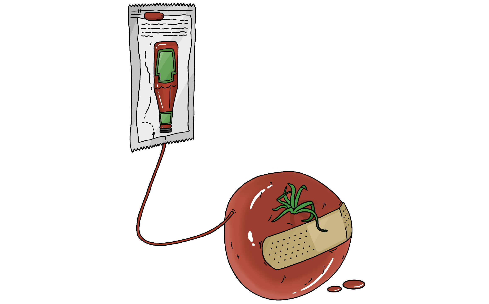
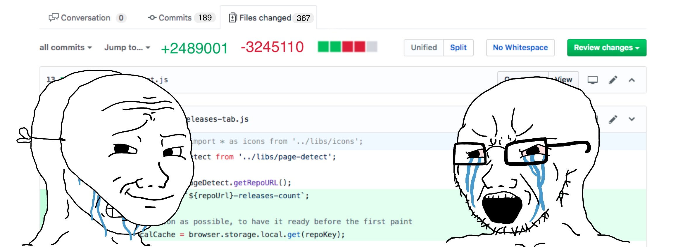
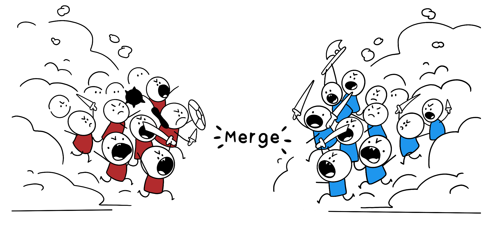

Refactoring Nightmares
·
Leisure Seizure·
#Project
#Design Patterns 5 min read
5 min read

Get Well Soon.
You are working on a fast-growing, never-stopping product; 35 sprints and 600 coffees later, you finally got to move on, and a new engineer steps in, or you realize sooner or later that you cannot keep up with the feature requests while ensuring code quality. Then, after raising the need for refactoring as blockers for a couple of features, finally! It’s the day when your engineering team decides to dedicate bandwidth for refactoring - Sounds familiar? You are not alone.
How to prevent the need for a major refactor
Don’t Rebuild; Build the Right Things.
(1) Striking the right balance between business needs and development time is beyond important, especially in an early-stage start-up, quantifying the need to follow best practices to write clean code with meaningful test cases can be harder than it looks. One of the go-to approaches is to retrospect the hotfixes/number of bugs/blockers to the original story. Have a process around merging code to pre-production/production:
- Set a code coverage threshold,
- automatically tag pull/merge requests without review comments, or the classic “LGTM” (Looks Good To Me),
- link hotfixes to production to the original story/PR,
- “code owners” for certain critical classes/modules, not everyone has access to merge changes to any file/module (important for a monolith codebase).
(2) Almost never start working on a feature directly on your IDE,
- gather the requirements,
- start a rough solutioning document,
- list down the different components,
- direct how each of these components talks to each other,
- think of the extent of abstraction and probable future use cases,
- decide on the contracts and re-iterate
Finally, it’s time to get on to that IDE and start off with the low-level design: interfaces, entities, DTOs, request/response, etc, followed by the implementation backed with test cases (Test Driven Development).
If it’s a Stable Product, Don’t Touch it
Do the very opposite! Just because the application is stable and doesn’t have more features coming up anytime soon does not necessarily mean it goes untouched. Of course, it may not be the highest priority, but make sure to maintain the project and keep it up to date before it bites you back at a later stage:
- Upgrade dependencies, at least the next major version, if not minor ones.
- Keep it on par with the rest of the codebase/services, be it the architecture, conventions, or contracts.
- Stable services are often forgotten or taken for granted; write detailed documentation.
Again, from the business point of view, making any changes to a stable product has no ROI, at least in the short time, but it’s services such as these that expose security vulnerabilities and have scalability issues in the longer run.
Refactoring is NOT a One-time Gig
Despite extensive solutioning and following all the best practices, the product requirements, customer needs, and business goals aren’t as predictable as we think and are likely to change drastically over time. Fortunately, the changes aren’t overnight either;

- The best way to avoid heavy refactoring is to do your refactoring a lot more often.
- Revalidate the existing low-level design when you touch older sections of the codebase.
- Temporary hacks aren’t too bad, but they eventually become the norm; these hacks should top the list of items to take up next.
- Don’t worry about “Ohh! That’s too much code for a small use-case”. For example, consider a finite state-machine of 5 states of 4 transitions, resulting in a state-machine orchestrator/engine class, four transitions classes, four listener classes (pub-sub), and classes/functions for API resource(s), transformations, DTOs, etc. For all you know, the same could have been written with a bunch of if-else conditions on states.
- Don’t be shy to use design patterns; don’t go overboard with it either. The best site for design patterns https://refactoring.guru/design-patterns
Also, if you have a story for refactoring under technical debt, it’s a clear indicator that something isn’t right.
Find ways to correlate the importance of refactoring to ROI.
Alrighty, this is the last one. As mentioned earlier, it’s not always easy to emphasize the importance of regular refactoring, which may seem like it’s slowing you down.
“Think of it this way: You’re a code politician. Your stakeholders are your citizens, and they will expect you to not only make new laws but also to repeal laws that no one agrees with anymore. Refactoring is just as necessary as feature development, and developers tend to focus too much on adding new things. We can spend our time filling our rooms with new toys, clothes, and furniture, but we also need to clean our rooms and throw out old items from time to time.”
Head back to “Don’t Rebuild; Build the Right Things” and come up with metrics to better justify the need for refactoring.
How to refactor
Pause new development while refactoring
Imagine refactoring, and the other developers are also making changes or even refactoring the same class you are - leading to a merge-conflicts nightmare. So, communicate beforehand about the changes you plan on doing, and make sure to refactor in stages so that it doesn’t end up being a blocker for too long.

Define the scope of your refactoring
Refactoring is not different from working on a feature; start with
- gathering context about the existing piece of code you are about to refactor,
- scope the refactoring plan and decide on the classes/functions you’d refactor,
- as always, don’t start coding right away; start with the low-level design and come up with a rough sketch of what the results look like - more importantly, take solutioning-time into consideration while estimating the approximate time,
- finally, prioritize and break down the refactoring task into smaller deployable chucks instead of raising that one mega-sized pull request expecting your peer to review it.
Test cases, Test cases, Test cases
To start with, one shouldn’t even refactor if there are minimal or no prior test cases. Always remember, if anything can go wrong, it will (murphy’s law). I mean it! Maybe refactoring isn’t the right choice at this moment. Instead, improve the code coverage, document the expected behavior, and visit back to refactor. Without a quantifiable metric to measure the correctness of the refactor, the repercussions can be brutal. If there are test cases with good code coverage already, follow TDD, add new test cases, and fix the older ones.
All said, how deep is the mess you’re in? Coming out of ugly legacy code is hard, and not many signup for it. The same old “prevention is better than cure” is the way to avoid ending up with the Refactoring Nightmare.

Cite this article as: Adesh Nalpet Adimurthy. (Jun 1, 2022). Refactoring Nightmares. PyBlog. https://www.pyblog.xyz/refactoring-nightmares
 #index
#index